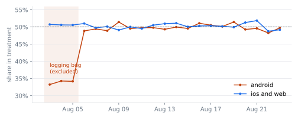
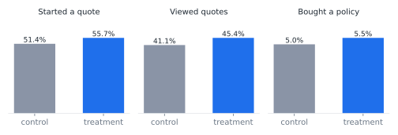
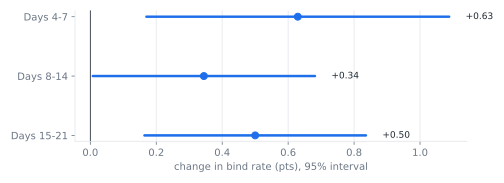
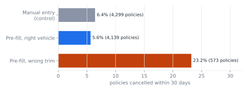
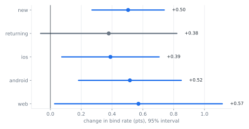

Should every customer get vehicle pre-fill?
A/B test readout for an insurance quote flow. Analysis in ClickHouse SQL and Python. All data is synthetic. Code, notebook and memo
1. The data had to be fixed first
The full window failed the sample ratio check (p = 1.8e-07). Treatment Android users were missing for three days because of a logging bug. I excluded those days for everyone. The split in the remaining window is healthy (p = 0.58).

2. Pre-fill gets more people to buy

| Bind rate | Control | Treatment | Difference, 95% CI |
|---|---|---|---|
| Raw | 5.02% | 5.49% | +0.47 pts [+0.26 pts, +0.68 pts] |
| CUPED adjusted | +0.47 pts [+0.26 pts, +0.68 pts] |
Lift by period, to check for a launch-week novelty effect:

3. But the wrong trim gets cancelled
Cancellations within 30 days rose +1.35 pts [+0.29 pts, +2.41 pts], past the +1.0 point margin. The rise comes from plate lookups that returned the wrong trim. Correct pre-fills cancel like manual entry.

After cancellations, retained commission per user moved +$0.55 [+$0.20, +$0.91].
4. Who it works for

Segments are corrected for multiple comparisons (Benjamini-Hochberg).
5. Recommendation
Add a one-tap "Is this your vehicle?" step and rerun for two weeks with the same guardrail. If it catches the wrong-trim lookups, retained policies would rise about +0.48 pts per user, roughly 16,679 extra active policies a year. That figure is a projection. The rerun decides it.
Check on the method: the data is synthetic, so the true lift is known (+0.46 pts). The measured interval covers it, and a CI test fails if it ever doesn't.